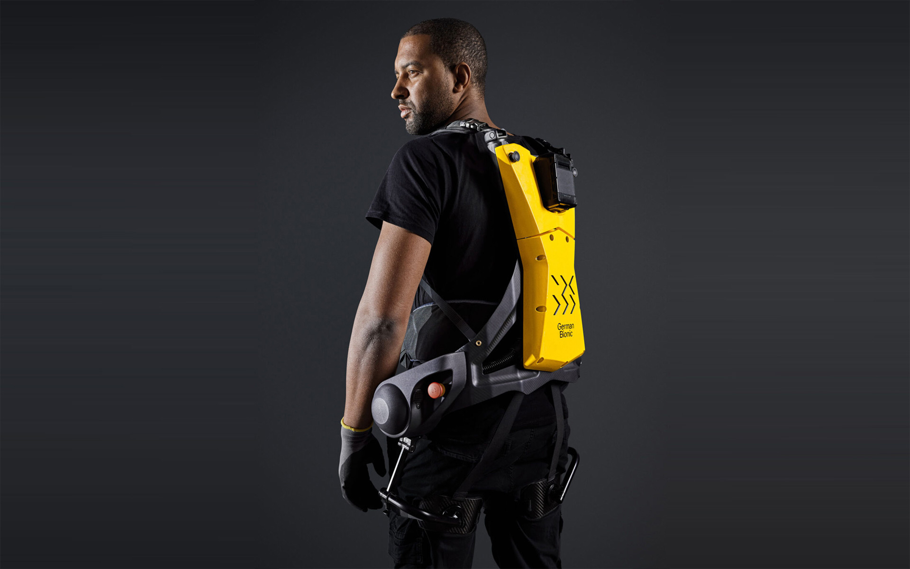
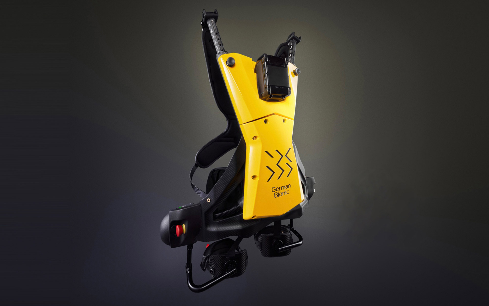
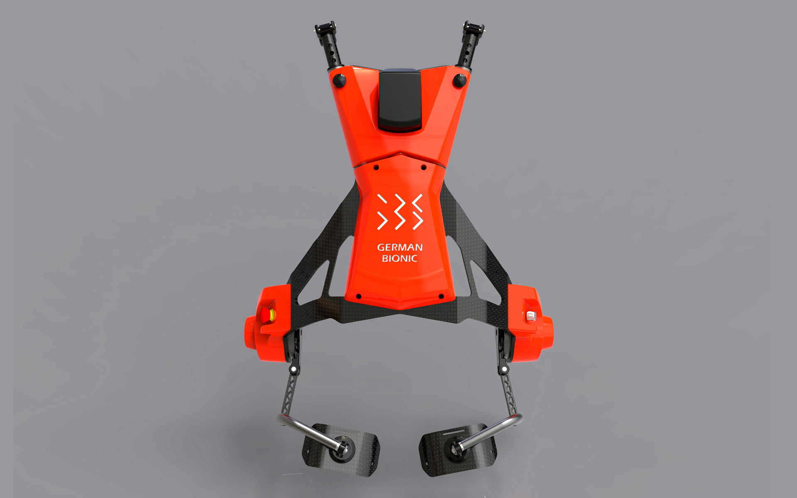
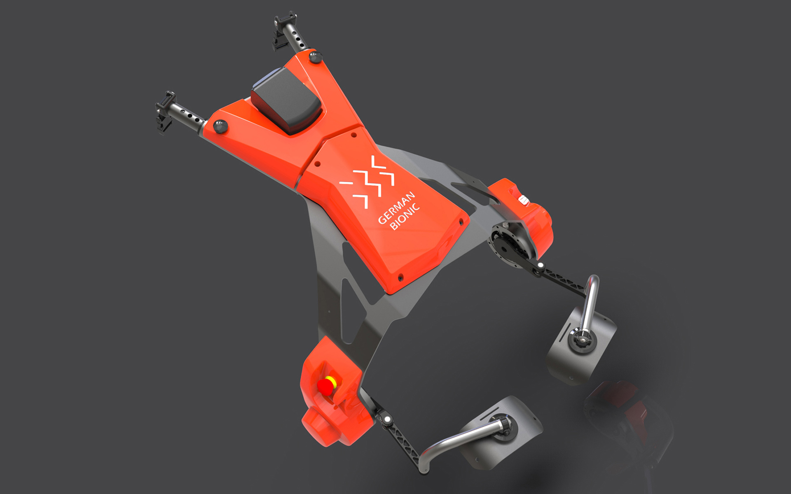

German Bionic Cray X
Exoskeleton
German Bionic Cray X
Exoskelett
The exoskeleton German Bionic Cray X is a man-machine system that combines human intelligence with mechanical power by actively assisting or augmenting the wearer's movements, minimizing the risk of work-related accidents and congestive illnesses.
The German Bionic Cray X was specially designed for the manual handling of heavy goods and tools by
reducing the compression pressure in the lower back area.
Exoskeletons are used wherever human work can not reasonably be replaced by full automation or robotic
systems. These include work processes in industrial production, for example in the automotive industry,
but also physically heavy work in the construction industry and logistics. The German Bionic Cray X uses
pioneering micromechanical components and an ergonomic, ultralight carrying system.
The design was specifically tailored to the ergonomic requirements. The Cray X must not have any
annoying edges where you can be hurt. For industrial use, it must be sufficiently robust without
increasing the dead weight of the Cray X. Changing the battery has to be fast and uncomplicated.
Selić Industriedesign service: Design concept, design consultation, design sketches, CAD design support,
CAD freeform modeling, design refinement, processing of design data for the engineering department
Das Exoskelett German Bionic Cray X ist ein Mensch-Maschinen-System, das menschliche Intelligenz mit maschineller Kraft kombiniert, indem es die Bewegungen des Trägers aktiv-assistiv unterstützt oder verstärkt und so das Risiko von Arbeitsunfällen und überlastungsbedingten Erkrankungen minimiert.
Das German Bionic Cray X wurde speziell für die manuelle Handhabe von schweren Gütern und Werkzeugen
konzipiert, indem es den Kompressionsdruck im unteren Rückenbereich verringert.
Exoskelette kommen überall dort zum Einsatz, wo menschliche Arbeit nicht sinnvoll durch
Vollautomatisierung oder Robotik-Systeme ersetzt werden kann. Hierzu zählen Arbeitsprozesse in der
industriellen Produktion, beispielsweise in der Automobilbranche, aber auch körperlich schwere Arbeiten
im Baugewerbe und der Logistik. Im German Bionic Cray X kommen zukunftsweisende mikromechanische
Komponenten und ein ergonomisches, ultraleichtes Tragesystem zum Einsatz.
Das Design wurde gezielt auf die ergonomischen Anforderungen abgestimmt. Das Cray X darf keine störenden
Kanten haben, an denen man sich verletzen kann. Für den industriellen Einsatz muss es ausreichen robust
sein, ohne dass das Eigengewicht des Cray X zunimmt. Der Akkuwechsel muss schnell und unkompliziert
erfolgen.
Selić Industriedesign Dienstleistung: Designkonzept, Designberatung, Designentwürfe,
CAD-Designunterstützung, CAD-Freiform-Modellierung und Detailgestaltung, Aufbereitung von Designdaten
für die Konstruktion




Images © German Bionic System GmbH, © Selić Industriedesign